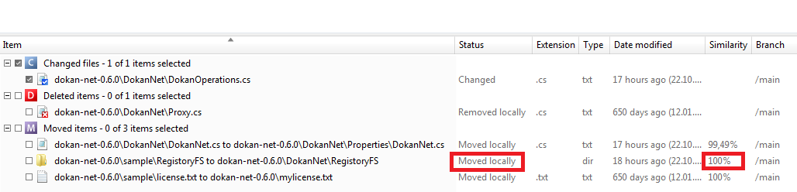

Now, we are going to move a directory. For example, we are going to move ‘dokan-net-0.6.0\sample\RegistoryFS’ to ‘dokan-net-0.6.0\DokanNet’. In order to do that, open a Windows Explorer and move the directory. The “Pending Changes” view shows what we’ve modified so far:

Figure 1: Moved Directory
It explains the move you just performed, the status sets “moved locally” and similarity column contains “100%”. As you see Plastic identifies and displays only the directory as moved, instead of printing all files inside as moved.